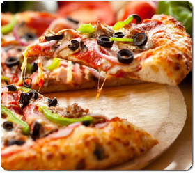

Entusiasta, motivada, dispueda a dar lo mejor de mi, Me encanta explorar y aprender sobre los últimos avances tecnológicos. Siempre estoy buscando formas de innovar y mejorar.
Instagram"No te preocupes por los fracasos, preocúpate por las oportunidades que pierdes cuando ni siquiera lo intentas".

Disfruto muchísimo de los momentos en los que me puedo desconectar y sumergirme en mis pasatiempos favoritos. Escuchar música es uno de ellos, ya que me permite explorar y conectar con cada melodía y letra. Además, salir , conocer nuevos lugares me brinda la oportunidad de relajarme, disfrutar del aire libre y encontrar inspiración. Estos momentos me ayudan a recargar energías.
Estudio Ingeniería en Desarrollo de Software, una carrera que combina mi pasión por la tecnología y mi interés en resolver problemas complejos, Me motiva la idea de crear soluciones innovadoras que optimicen procesos, faciliten la vida cotidiana y generen un impacto positivo.
Mi comida favorita es la pizza, combina sabores intensos y deliciosos. Me encanta cómo cada bocado ofrece una mezcla de texturas, Disfruto especialmente de los jugos naturales, sabor refrescante y contrastan perfectamente con el sabor salado de la pizza. Mi combinación favorita es una pizza recién horneada acompañada de un jugo de naranja o orchata.